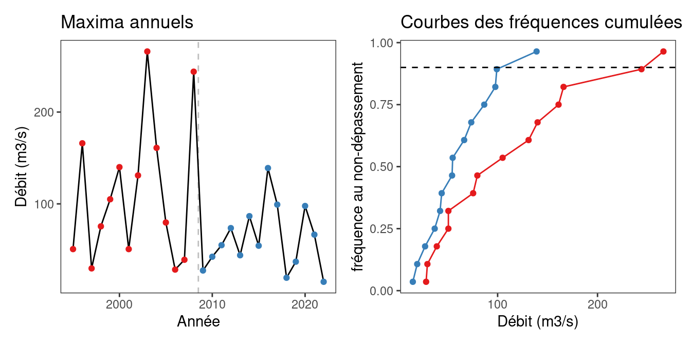

Chapitre 2 Probabilités
Le chapitre précédent a permis de présenter quelques méthodes permettant de décrire une série d’observations et d’en extraire de l’information. Ce chapitre tente d’aller au-delà d’une simple description empirique des données, en utilisant des modèles probabilistes pour décrire la distribution des observations.
La théorie des probabilités fournit un cadre général pour décrire les caractéristiques de variables « génératrices » de données. La puissance de cette théorie tient à sa généralité. En contrepartie, la définition même du terme « probabilité » fait appel à des notions mathématiques trop élaborées pour être présentées dans ce cours si l’on souhaite être totalement rigoureux du point de vue mathématique. Nous nous contenterons donc d’étudier une version « allégée » de la théorie probabiliste, qui sera néanmoins amplement suffisante en pratique.
Cette seconde section est organisée de la manière suivante. Dans un premier temps, les principales motivations conduisant à s’intéresser au cadre probabiliste seront présentées (section 2.1). Les notions de base seront ensuite définies (section 2.2), avant de présenter plus en détail quelques distributions fréquemment utilisées en hydrologie : la loi de Gauss ou loi normale (section 2.3), la loi log-normale (section 2.4), et les lois de valeurs extrêmes (sections 2.5-2.6). Un résumé d’autres distributions usuelles est également fourni en Annexe 6.1.
2.1 Motivations
L’aproche descriptive présentée dans le chapitre précédent permettait déjà d’apporter des éléments de réponse aux questions fréquemment posées à l’hydrologue (par exemple, « Quelle valeur de débit a une probabilité 1% d’être dépassée chaque année ? » ; « Quelle est la probabilité de dépassement de la crue de décembre 2003 ? »). On peut alors s’interroger sur l’intérêt de recourir à des concepts mathématiques supplémentaires. Nous expliquons ici pourquoi il n’est pas raisonnable de se contenter de cette approche descriptive.
2.1.1 Quelle formule pour la fréquence au non-dépassement ?
Nous avons déjà mentionné en section 1.2.1 le caractère arbitraire de la formule utilisée pour la fréquence au non-dépassement. Par définition, la fréquence au non-dépassement de la valeur de rang \(i\) est égale à \(i/n\), où \(n\) est le nombre d’observations. Ceci correspond à la définition suivante : « La fréquence au non-dépassement d’une valeur donnée est égale à la fréquence des observations inférieures ou égales à cette valeur ». Mais si l’on remplace « inférieur ou égal » par « inférieur strict », la formule devient alors \((i-1)/n\). En plus de ces deux formules naturelles, la littérature regorge d’autres formules pour le calcul des fréquences au non-dépassement. On peut citer par exemple la formule de Hazen : \((i-0.5)/n\). Cette formule est en quelque sorte « au milieu » des deux formules naturelles \(i/n\) et \((i-1)/n\) (et nous conseillons d’utiliser cette formule par défaut). Mais il en existe de nombreuses autres, par exemple \(i/(n+1)\) (Weibull), \((i-0.31)/(n+0.38)\) (Beard), \((i-0.44)/(n+0.12)\) (Gringorten), etc. Chacune de ces formules résulte de diverses considérations théoriques (non détaillées ici), mais dans tous les cas, il serait donc souhaitable de se donner un cadre méthodologique s’affranchissant de ce choix largement arbitraire.
2.1.2 Interpolation et extrapolation
Les exemples donnés en section 1.2.1 ont permis d’illustrer les limites d’une approche purement empirique pour l’extrapolation. Ainsi, si l’on se basait uniquement sur les fréquences au non-dépassement empiriques (avec la formule \(i/n\)), on conclurait que la plus forte valeur observée ne peut pas être dépassée ! L’utilisation d’une autre formule de fréquence empirique ne résoudrait que partiellement le problème, puisque l’extrapolation au-delà de la valeur la plus forte resterait problématique. Mentionnons également que l’interpolation entre deux fréquences empiriques par de segments de droite n’est guère satisfaisante.
2.1.3 Variabilité d’échantillonnage et incertitudes
La plus forte motivation conduisant à l’utilisation de modèles probabilistes est liée à la variabilité d’échantillonnage. Ce terme générique désigne le fait que les observations de débit dont nous disposons ne constituent généralement qu’un faible échantillon de l’ensemble des réalisations possibles de la rivière. En conséquence, les estimations seront dépendantes des données effectivement observées. Cette variabilité d’échantillonnage peut être illustrée en considérant les 28 maxima annuels représentés en Figure 2.1 (gauche). On constate que deux événements forts ont été observés lors de la première moitié de la période. La figure de droite illustre l’impact de ces deux valeurs sur l’allure des courbes de fréquence cumulée calculées sur deux périodes de 14 ans. Ainsi, si l’hydrologue doit répondre à la question « quel débit de crue a une probabilité au non-dépassement de 0.9 ? », une approche purement empirique conduira à répondre « environ 100 \(m^3.s^{-1}\) » en utilisant les données de la seconde période, mais « environ 250 \(m^3.s^{-1}\) » sur la base de la première !
Précisons que l’utilisation de modèles probabilistes ne permet pas de s’affranchir totalement de cette difficulté : en effet, leur estimation est également soumise à la variabilité d’échantillonnage, mais dans une moindre mesure. De plus, l’approche probabiliste possède l’avantage majeur de permettre la quantification de cette variabilité, et de l’incertitude qui en résulte.

Figure 2.1: Illustration du concept de variabilité d’échantillonnage : valeurs maximales annuelles pour l’Azergues à Lozanne sur 2 périodes de 14 ans (gauche), et courbes des fréquences cumulées correspondantes (droite).